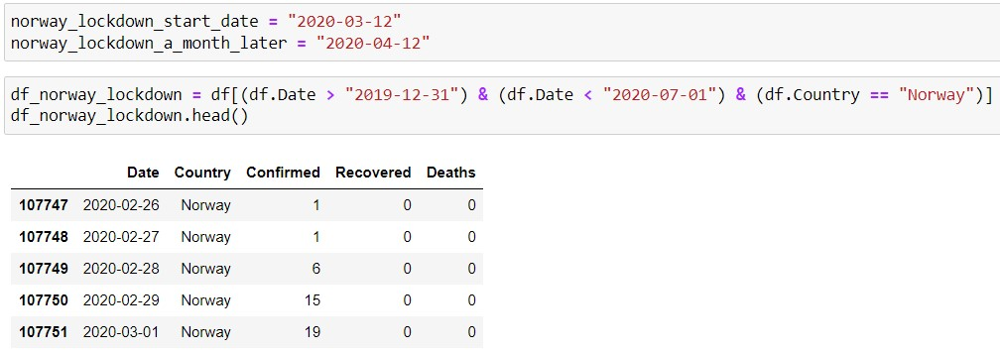

Project: COVID-19
In this project, I worked with two different case studies diving deeper into COVID-19 data using Python. In the first case study, I used statistics on covid-cases and deaths related to covid worldwide. I used this to look for correlation with the World Happiness Report 2022, a yearly report that calculates a score based on different parametres related to people´s happiness. This case study focused mainly on data processing and analysis. The second case study however focused mostly on data visualization. In this project..
A case study: COVID-19 data analysis
Importing data
First, I imported pandas, numpy, seaborn and matplotlib.pyplot. Then, I imported all three CSV files and took a look at the data. This process can be seen in the images below. Both covid-related tables consist mostly of columns that depict daily registrered covid-cases and covid-related-deaths. For each day, this number is aggregated, so the final registrered day shows us the sum of cases/deaths for the entire period. I also uploaded and imported a csv-file on global population by country and/or region. Since the data on covid-cases and covid related deaths are total sums, I figured that it could be interesting to look at this data also with the countries´ population taken into consideration. For the purpose of correlation this however makes no difference.
Data processing
In the next phase, I worked on processing the data with the goal of having only one dataframe containing all information
I am interested in. For each table, I dropped some columns using the "drop"-command and I grouped all tables after country/region
by using the "groupby"-command. Then, I created a new column which I wanted to depict the rate of COVID-infections. Instead of
calculating an average variable, I chose to calculate a variable showing the highest infection rate per country during the period.
The idea was that the maximum amount of infections happening in a country during one day may indicate something about that country.
How i did this can be seen on the right side.
Then, I inner-joined the tables using the "join"-command. Further, I calculated some new variables. I divided both the total
number of covid-cases, the total number of COVID-related deaths and the maximum infection rate by the total population in each
country, before multiplying by 1000. This gave me the number of registrered covid-cases during the period per 1000 inhabitants,
the number of covid-related deaths per 1000 inhabitants and the maximum infection rate in one day per 1000 inhabitants. I chose
to keep the happiness score, healthy_life_expectancy and GDP_per_capita as variables depicting how happy, healthy and
economically well-off people are. We have to keep in mind however that the happiness score is a weighed number where
GDP per capita and healthy life expectancy were inputs. After renaming some columns, my final dataframe looked like this:
Looking for correlation and visualizing the results
To find out wether there is any correlation between the happiness variables and the covid-related variables, I used the "corr"-command. As we see clearly, there is a significant correlation between several of the variables. The happiness score has a 31% postitive correlation with the number of COVID-related deaths, a 46% positive correlation with the maximum daily infection rate and a positive correlation with COVID-cases of 63%. For the healthy life expectancy variable, these numbers are respectively 47%, 49% and 70%. For the GDP per capita, these are 42%, 48% and 69%.
We can also visualize this using a scatterplot with a regression line. In order to display the data better, I used a logarithmic scale and the sns.regplot-command. Looking at scatterplots of the "score" againgst the maximum daily infection rate, the "healthy life expectancy" against the COVID-cases and the GDP per capita against the COVID-related deaths, we see clearly that there are strong correlations between all these variables.
A case study: COVID-19 data visualization
Importing and processing the data
This time, I import pandas, numpy, matplotlib and plotly.express. I use the following URL https://raw.githubusercontent.com/datasets/covid-19/master/data/countries-aggregated.csv to acguire daily reported data confirmed covid19 cases, deaths and recoveries from 198 countries. The first data observations are from the 22nd of January 2020, the last one are from April 2022. The data for Norway can be seen on the image to the right.
One type of chart Plotly offers is the choropleth map, which is seen below. In this case I visualized the global spread of COVID-19 cases and COVID-19 related deaths. Animation_frame allows us to choose a variable, in this case date, to see how the map changes.
-
Now lets visualize how intensive the COVID-19 transmission has been in Norway throughout the entire period. To do this,
we first must calculate the first derivation. Then we plot a line-graph using plotly.
Another interesting aspect to look at is how a lockdown affects infections and deaths in a country. In this case, I will once again use Norway as an example. I will look at thefirst wave of COVID-infections, and the effect of the first "lockdown" which was put into place on the 12th of March. In this case I find it suiting to only look at data from the first half of 2020. ed on the 26th of february. Below on the left side you can see how I did this. In the middle you can the graph I made with this. In the right graph I add some code to visualize the date of the lockdown and one month later. This shows how infections first increased for another two weeks, before decreasing.
loloch was put into place on the 12th of March. In this case I find it suiting to only look at data from the first half of 2020. ed on thl